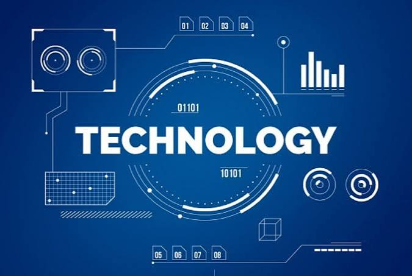

Technology is very important in our daily lives because it makes everything easier, faster, and more comfortable. It helps us communicate with people around the world, find information, and learn new things. In education, technology helps students study and improve their knowledge. In healthcare, it helps doctors treat patients and discover new medicines. It also makes transportation and communication easier and saves us a lot of time. Nowadays, we use technology almost everywhere, such as at school, at work, and at home. It also provides entertainment through music, movies, and games. Although technology has some disadvantages, its advantages are very important for society. In conclusion, technology is an essential part of our lives because it makes our everyday activities easier and helps us create a better and more developed future.
